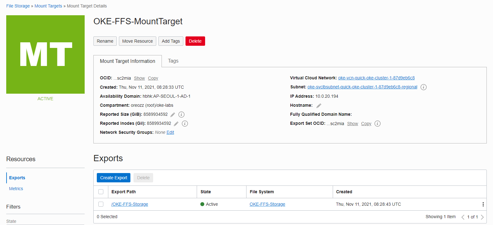
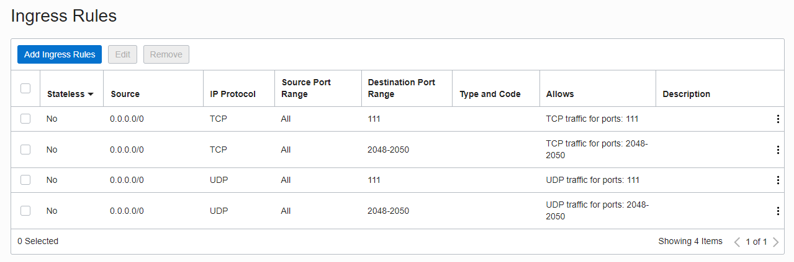

[Last updated on ] archives/oracle-cloudnative/oke/6.persistent-volume/
1.6.2 File Storage 사용하기(Flex Volume Driver)
컨테이너의 내부 스토리지는 기본적으로 컨테이너가 삭제, 종료되면 사라집니다. 데이터가 사라지는 것을 막고 보존이 필요한 데이터를 저장하기 위해 별도의 Persistent Volume을 사용합니다.
Persistent Volume으로 파일 공유를 위해 저장소로 많이 사용하는 NFS(Network File System)을 사용할 수 있습니다. 네트워크 파일 시스템인 NFS의 경우 동시 쓰기를 지원하기에 Kubernetes에서 멀티 POD에서 동시에 읽고 쓰는 용도로 사용할 수 있습니다. OCI에서는 OCI File Storage Service(FSS)가 OCI에서 제공하는 NFS 서비스입니다. 이제 OKE에서 OCI File Storage을 Persistent Volume으로 사용하는 RWX 접근 모드로 사용하는 방법을 확인해 보겠습니다.
Files Storage 만들기
관련 문서를 참고하여 File Storage를 만듭니다.
-
OCI 콘솔에 로그인합니다.
-
좌측 상단 햄버거 메뉴에서 Storage > File Storage로 이동합니다
-
대상 Compartment를 확인합니다.
-
File Systems에서 Create File System을 클릭합니다.
-
기본 설정화면에서 간단히 아래 정보를 원하는 값이 맞게 알맞게 수정하고 생성합니다.
- File System Information:
- Name
- Mount Target Information:
- New Mount Target Name
- Virtual Cloud Network
- Subnet
- File System Information:
-
생성결과 확인
File Storage > Mount Target 에서 생성된 Mount Target 상세 정보로 이동하여 다음 정보를 확인합니다.
- Mount Target OCID: …sc2mia
- IP Address: 예) 10.0.20.194
- Export Path: 예) /OKE-FFS-Strorage

-
Security List 설정
File System 생성시 Mount Target의 서브넷에 Security List에 File Storage 서비스를 위한 규칙을 추가합니다.

File Storage 서비스를 이용하여 Persistent Volume 사용하기
-
Storage Class 만들기
앞서 확인한 Mount Target OCID로 업데이트 후 적용
apiVersion: storage.k8s.io/v1 kind: StorageClass metadata: name: oci-fss provisioner: oracle.com/oci-fss parameters: # Insert mount target from the FSS here mntTargetId: ocid1.mounttarget.oc1.ap_seoul_1.aaaaaa4np2szmmn5nfrw4llqojxwiotboawxgzlpovwc2mjnmfsc2mia -
Persistent Volume (PV) 만들기
Mount Targe의 IP와 Export Path로 업데이트 후 적용
ReadWriteMany 접근 모드로 지정하였습니다.
apiVersion: v1 kind: PersistentVolume metadata: name: oke-fss-pv spec: storageClassName: oci-fss capacity: storage: 100Gi accessModes: - ReadWriteMany mountOptions: - nosuid nfs: # Replace this with the IP of your FSS file system in OCI server: 10.0.20.194 # Replace this with the Path of your FSS file system in OCI path: "/OKE-FFS-Storage" readOnly: false -
Persistent Volume Claime(PVC) 만들기
ReadWriteMany 접근 모드로 지정하였습니다.
apiVersion: v1 kind: PersistentVolumeClaim metadata: name: oke-fss-pvc spec: storageClassName: oci-fss accessModes: - ReadWriteMany resources: requests: storage: 100Gi volumeName: oke-fss-pv -
PVC를 사용하는 POD 배포하기
생성한 PVC를 볼륨으로 등록하여 마운트합니다.
앞선 예제와 달리 replica를 복수개로 지정할 수 있습니다.
apiVersion: apps/v1 kind: Deployment metadata: labels: app: nginx-fss-pvc name: nginx-fss-pvc spec: replicas: 3 selector: matchLabels: app: nginx-fss-pvc template: metadata: labels: app: nginx-fss-pvc spec: containers: - name: nginx image: nginx:latest volumeMounts: - name: data mountPath: /usr/share/nginx/html volumes: - name: data persistentVolumeClaim: claimName: oke-fss-pvc -
실행 및 결과 예시
3개 POD가 각각 서로 다른 3개의 Worker Node에 위치하지만 정상 기동된 것을 볼 수 있습니다.
oke_admin@cloudshell:file-storage (ap-seoul-1)$ kubectl apply -f oci-fss-storageclass.yaml storageclass.storage.k8s.io/oci-fss created oke_admin@cloudshell:file-storage (ap-seoul-1)$ kubectl apply -f oke-fss-pv.yaml persistentvolume/oke-fss-pv created oke_admin@cloudshell:file-storage (ap-seoul-1)$ kubectl apply -f oke-fss-pvc.yaml persistentvolumeclaim/oke-fss-pvc created oke_admin@cloudshell:file-storage (ap-seoul-1)$ kubectl get sc,pv,pvc NAME PROVISIONER RECLAIMPOLICY VOLUMEBINDINGMODE ALLOWVOLUMEEXPANSION AGE storageclass.storage.k8s.io/oci (default) oracle.com/oci Delete Immediate false 2d19h storageclass.storage.k8s.io/oci-bv blockvolume.csi.oraclecloud.com Delete WaitForFirstConsumer false 2d19h storageclass.storage.k8s.io/oci-fss oracle.com/oci-fss Delete Immediate false 34s NAME CAPACITY ACCESS MODES RECLAIM POLICY STATUS CLAIM STORAGECLASS REASON AGE persistentvolume/csi-14f32977-eaf6-4eaa-87bd-7c736ec43a52 50Gi RWO Delete Bound default/csi-bvs-pvc oci-bv 3h6m persistentvolume/oke-fss-pv 100Gi RWX Retain Bound default/oke-fss-pvc oci-fss 24s NAME STATUS VOLUME CAPACITY ACCESS MODES STORAGECLASS AGE persistentvolumeclaim/csi-bvs-pvc Bound csi-14f32977-eaf6-4eaa-87bd-7c736ec43a52 50Gi RWO oci-bv 3h6m persistentvolumeclaim/oke-fss-pvc Bound oke-fss-pv 100Gi RWX oci-fss 17s oke_admin@cloudshell:file-storage (ap-seoul-1)$ kubectl apply -f nginx-deployment-fss-pvc.yaml deployment.apps/nginx-fss-pvc created oke_admin@cloudshell:file-storage (ap-seoul-1)$ kubectl get pod -o wide NAME READY STATUS RESTARTS AGE IP NODE NOMINATED NODE READINESS GATES nginx-fss-pvc-9fb98454f-bc7hp 1/1 Running 0 24s 10.244.0.5 10.0.10.40 <none> <none> nginx-fss-pvc-9fb98454f-bxw4x 1/1 Running 0 24s 10.244.1.18 10.0.10.15 <none> <none> nginx-fss-pvc-9fb98454f-qm9tq 1/1 Running 0 24s 10.244.0.153 10.0.10.219 <none> <none> -
파일 쓰기 테스트
-
아래와 같이 첫번째 POD에서 PV로 파일쓰기를 했지만, 모든 POD에서 동일내용을 확인할 수 있습니다.
oke_admin@cloudshell:file-storage (ap-seoul-1)$ kubectl exec -it nginx-fss-pvc-9fb98454f-bc7hp -- bash -c 'echo "Hello FSS from 10.0.10.40" >> /usr/share/nginx/html/hello_world.txt' oke_admin@cloudshell:file-storage (ap-seoul-1)$ kubectl exec -it nginx-fss-pvc-9fb98454f-bc7hp -- cat /usr/share/nginx/html/hello_world.txt Hello FSS from 10.0.10.40 oke_admin@cloudshell:file-storage (ap-seoul-1)$ kubectl exec -it nginx-fss-pvc-9fb98454f-bxw4x -- cat /usr/share/nginx/html/hello_world.txt Hello FSS from 10.0.10.40 oke_admin@cloudshell:file-storage (ap-seoul-1)$ kubectl exec -it nginx-fss-pvc-9fb98454f-qm9tq -- cat /usr/share/nginx/html/hello_world.txt Hello FSS from 10.0.10.40
-